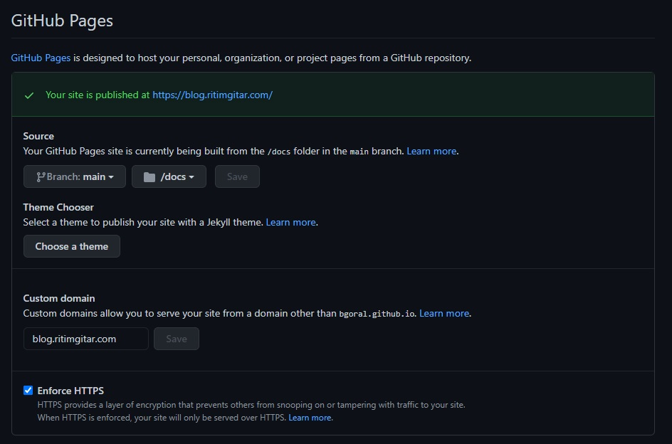

JAM Stack - Hugo - Blackout
In 2013, I was working as a technical lead for the company website transformation project. The technology was preselected by the vendor and upper management (SharePoint) and the contract was already signed. I was going to assure the quality of delivery. The old website was also SharePoint and it was too expensive to scale and maintain. Of course, I am not going to mention about the cost of licence, development and infrastructure of this new website but this was (probably today in many organisations) the situation more or less 10 years ago.
In Marc 2015, a countrywide electricity blackout occurred. We were working for an electric distribution company with %25 per-cent market share (8 Mil. customer). During the 1 day long blackout, customers were trying to get information about what had happened. Unfortunately, Sharepoint could not survive the first 1 hour. One HTML file, in 3 servers, cache enabled, behind an NLB, survived. (One mobile app having RabbitMQ backend also survived but I will tell this story later.)
The idea of static page generators was already there. Jekyll (and many others) was there since 2008. Now (probably) static page generators are the most secure, cost-efficient and scalable way of publishing things online. Of course, needs to be combined with different components (API’s and SaaS services) for large scale requirements. This is also called JAM Stack.
That’s why I built my blog with Hugo and publish it via Github using my GoDaddy domain.
What is my stack?
- Windows 10
- WSL 2 / Ubuntu (Very straghtforward)
- (new) Terminal (Windows Store > Get )
- A repository in github.com
- Vim
- Hugo
Why Hugo and how to install?
I was planning to use Jekyll, but configuration, package dependencies was too difficult for me to solve in WSL 2 environment. Probably there are solutions, but I did not want to lose my writing enthusiasm. I chose Hugo because it was written in go. I wanted to try and probably will write some custom plugins.
After the installation of WSL2 please update the package index
apt get update
For the installation of Hugo:
apt-get install hugo
That’s it. You can start writing (Really !! ).
Configuration of Github repository and creating Hugo site
To publish your static website via Github, you need to have a repository named xxx .github.io and It has to be public. If you want a private repository, you need to pay for static website publish feature. My repository name is bgoral.github.io.
You can create your repository via command line but I preferred to create this particular repository from github.com. After I created the repository, cloned the repository and initiated my new website with Hugo executable:
git clone https://github.com/bgoral/bgoral.github.io.git
hugo new site bgoral.github.io
Theme and site configuration
For my blog, I chose Cactus Theme. You can choose your theme among hundreds of other themes from themes.gohugo.io. To install Cactus to my newly created site:
cd bgoral.github.io
git clone https://github.com/monkeyWzr/hugo-theme-cactus.git themes/cactus
In the site folder, there is a file named config.toml. In this file changed the theme to
# config.toml
theme = "cactus"
Also changed some other configurations like colours, some text parameters. But this will depend on the theme you choose. Please refer to your theme documentation.
And to test if this is working or not:
cd bgoral.github.io
hugo server
The site is accessible from http://localhost:1313/
How to create a post
I create posts manually under content/posts folder with datetime information:
vim content/posts/2021-01-10-hugo-jam.md
Hugo is looking for some metadata at the beginning of the post.
---
title: "JAM Stack - How I built this blog"
date: 2021-01-10T11:18:19+01:00
draft: false
categories: Best Practises, Architecture
---
Above is the metadata of this post.
How to publish
The first step is to set Hugo “publishDir” as “docs” in the config.toml. This is for compliance and easy configuration. In Github pages documentation says;
If you choose the /docs folder of any branch as your publishing source, GitHub Pages will read everything to publish your site, including the CNAME file, from the /docs folder. For example, when you edit your custom domain through the GitHub Pages settings, the custom domain will write to /docs/CNAME. For more information about CNAME files, see “Managing a custom domain for your GitHub Pages site.”
# config.toml
publishDir = "docs"
Then configuration of the repository to enable Github pages. There is a section under repository settings. Below is my configuration. You do not need to change the default configuration. But if you have a custom domain like me, you need to do the necessary configuration from your domain provider control panel.

Don’t forget to push your changes to your repository.
hugo -D
git add *
git commit -m "First Post"
git push -u origin main
That’s all. Now you have a fast, secure and free website, can handle a nationwide blackout or a hacker news front page.